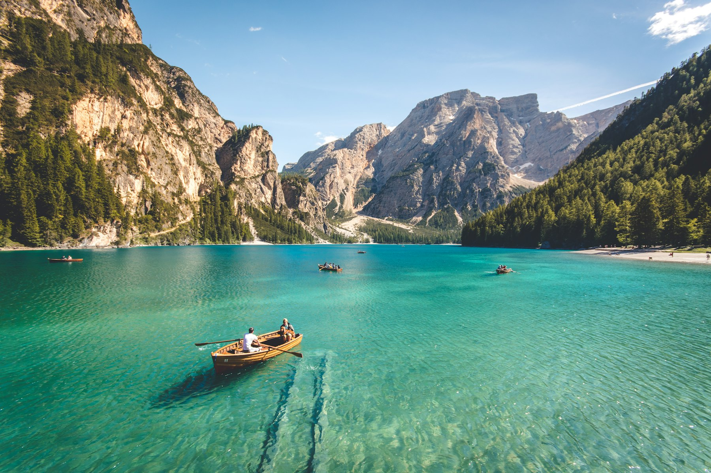
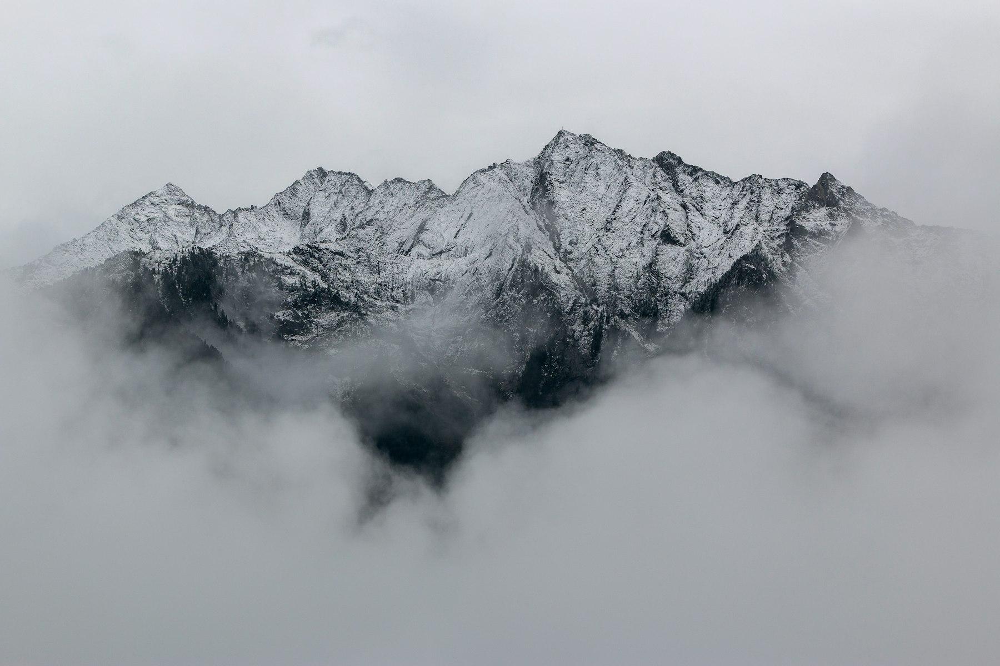
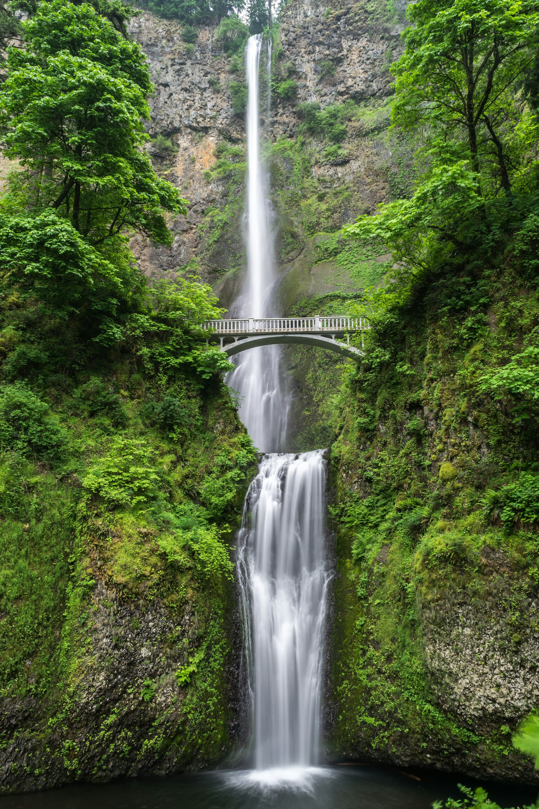

A Retrospective Exhibition · Halls of Light
Tom Milton
Twenty-Five Years on Film
photographs, 1996 – 2019
On view · 12 March – 28 June 2026 · Gallery East
Curator's Note
Across a quarter-century, Tom Milton carried the same patient eye from Tuscan wheatfields to the back streets of Havana. Working only in film, he waited for the hour the light turned generous.
These prints — gathered here for the first time — trace a slow conversation between place and portrait, between the silver of black and white and the warm, forgiving grain of Kodak Portra.
— The Curatorial Department
Gallery I
The Wide Country
Horizons held at the edge of daylight — large-format land studies from two decades of travel.

Last Light, Wheat Country 1998
Archival pigment print · 50 × 75 cm

The Cabin at Dawn 2003
Archival pigment print · 40 × 50 cm

Edge of the World 2002
Archival pigment print · 45 × 60 cm

Reflections, Still Morning 2000
Archival pigment print · 40 × 50 cm

Wind Lines 2008
Archival pigment print · 50 × 75 cm

Morning Fog, Cascades 2001
Archival pigment print · 45 × 55 cm
Gallery II
The Human Hour
Strangers and sitters met on the road — half in colour, half in the silver of black and white.

By the Window 2011
Archival pigment print · 40 × 50 cm

Stranger, No. 14 2012
Gelatin silver print · 40 × 50 cm

Soft Hour 2014
Archival pigment print · 40 × 50 cm

Portrait in Shadow 2018
Gelatin silver print · 40 × 50 cm

The Red Wall 2019
Archival pigment print · 50 × 60 cm
Gallery III
The Quiet Wild
Forests, falling water, and the hush between the trees — where the photographer waited longest.

Cathedral of Pines 1996
Archival pigment print · 45 × 55 cm

Silence 2003
Gelatin silver print · 40 × 50 cm

Hidden Falls 2006
Archival pigment print · 50 × 60 cm